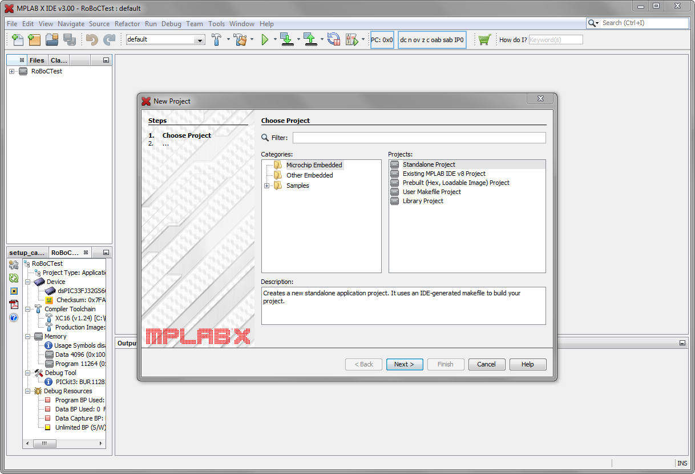
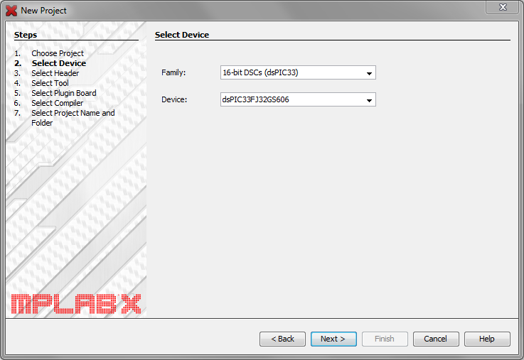
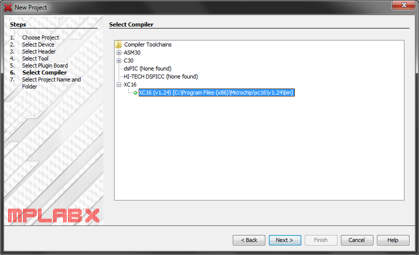
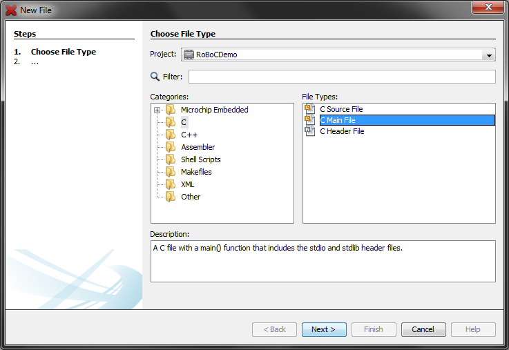

Getting Started
This example will show you how to write a simple program, and flash it to the bootloader. You will need to install MPLABX and the C16 compiler. Both are availalble for free from Microchip's website.
A quick note about the bootloader
Normally, microcontrollers are programmed using a dedicated programmer, such as the PICkit for Microchip, or the AVR usb-blaster for the AVR range. Buying a programmer can be expensive, so we opted to use a bootloader.
A bootloader is a special piece of code that runs before the main code on the IC. The bootloader listens for commands on the serial port. These commands are usually programming commands, but can also be used to erase or read the memory. If the bootloader received a command, it executes the command. If it does not receive a command, it continues on to the user's program.
The bootloader allows anyone to program the IC without dedicated hardware, using the right software. The bootloader we are using is the ds30 Loader. The specification for the protocol is open source, however, the computer software is closed source, and currently only works on Windows.
For more information about the bootloader see here.
Setting up a project
The software we use to program the IC is MPLABX. It is Microchip's new version of their IDE. It is available for Windows, Linux and OS X. Note that you need to download a compiler seperately, as each family of devices use their own compiler. The compiler we are using is the C16x compiler.
- Download and install MPLABX
- Download and install the XC16 compiler. The free version does not offer any optimization.
- Open the IDE, go to File - New Project
- For the project type, select Standalone Project and click next
- Select the correct Device. You can use the Family drop-down menu to select the correct family (16-bit DSCs dsPIC33), and then select the correct device (dsPIC33FJ32GS606).
- You do not need to select any dedicated hardware, just click next.
- Make sure that the XC16 compiler is shown and selected. Click next
- Give the project a name, and make sure you know where the project is stored. Next we are going to create folders for the .c and .h files. The IDE likes placing these files in the main directory.
- Open the directory where the projects is stored. In the directory, create two new folders, source and include
- Copy the skeleton code into the folder
- In MPLABX you should see the project navigator to the left. If the project is minimized, open it. Right-click on the Header Files option, and select Add Existing item. In your project folder, open the include folder and select all the files.
- Do the same for the Source Files option, this time selecting files from the source folder.
- We must create a main file for the project. Go to File - New File. Select C Main File as the type, from the C category.
- Name the file main, and change the folder to source You should now have an empty project, ready for your code. You will still need to make some changes to your main file before the code will work on the microcontroller.




Additional Notes
-
To change project in MPLAPX, right click the project in the Project explorer, and click Set as main project